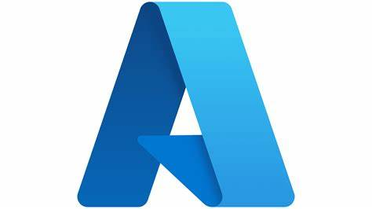

The first project that I am showcasing was my final project for my introduction to cloud management course, where I was to create a comprehensive migration plan for a proposed company that would be transitioning their on-premises resources to the cloud environment. The fictitious company, Mo Vid, developed video technologies that enabled video capture, management, and delivery for any organization. Their existing solution of their on-premises physical infrastructure was not meeting the demand for their continued growth, so they began to seek options for moving to the cloud for flexible scalability and availability.
My recommendation for Mo Vid is that they transition from 4 on-premises servers to 4 Microsoft Azure solutions, including infrastructure-as-a-service (IaaS), platform-as-a-service (PaaS), and software-as-a-service (SaaS) solutions. The priorities of the company were up for interpretation, so I assumed that they wanted ultimate durability and availability of data (requiring the highest level of backup solution) and that they required as close to 100% uptime as possible as to keep their customers happy.
The backup solution used Azure Backup and would store their Azure Virtual Machine and SQL workload data for 60 days for video files and 30 days for SQL server. The data would be stored in the read-access geo-redundant storage, replicating the data to a secondary region that is hundreds of miles away from the primary region, but then also provides read-only access to the data in the secondary location. Using this method of backing up customer data provided the highest storage durability, creating 6 copies of the data on separate nodes, hundreds of miles apart.
In the project, I gave a comprehensive total cost of ownership (TCO) for the client using prescribed numbers that included the amount of customers and the amount of data they had to migrate, keeping in mind the need for a mass one-time migration of data to the cloud. For each of their customer categories: small, medium, and large, I created an estimate with a link to an interactive Microsoft Azure budget that explained the TCO for one year, as requested by the executives of the company.
This project required that I learn a lot about the Microsoft Azure service offerings and how to produce a well-architected design for availability and durability. See my work here. [include URL]
My third project is one that I am creating for my independent study course entitled Enterprise & Cybersecurity Architecture, where it my goal to understand and apply concepts and methods for organization-wide integrated frameworks that cover structure, function, technology, and security. For the final project of the course, I am creating a series of documents that would be placed in a company’s enterprise architecture repository, including an overview diagram, a “quad’ diagram, and a zero-trust cybersecurity diagram all designed in Microsoft Visio. Details of the project are forthcoming.
My second project was for my introduction to project management for information systems that I took in my undergraduate career. The goal of the project was to create a comprehensive project charter for the expansion of a fictitious organization into a new office building. My role as project manager was to create a project charter with a draft work breakdown structure (WBS), analysis of the scope and deliverables, management constraints, assumptions, initial list of potential risks, quality management approaches, communication, and roles for decisions, policy, and approvals. See a link to my work here. [include URL]
You are looking at project 4 right now! During my graduate degree, I decided to audit the undergraduate course, introduction to front-end web development for personal enrichment. I wanted to build out my coding skills for the very purpose of creating a digital portfolio—which happens to be the final project for this class. In this website, I have used hypertext markup language (HTML) to construct the website and Formspree for the contact form on the home page of this website.